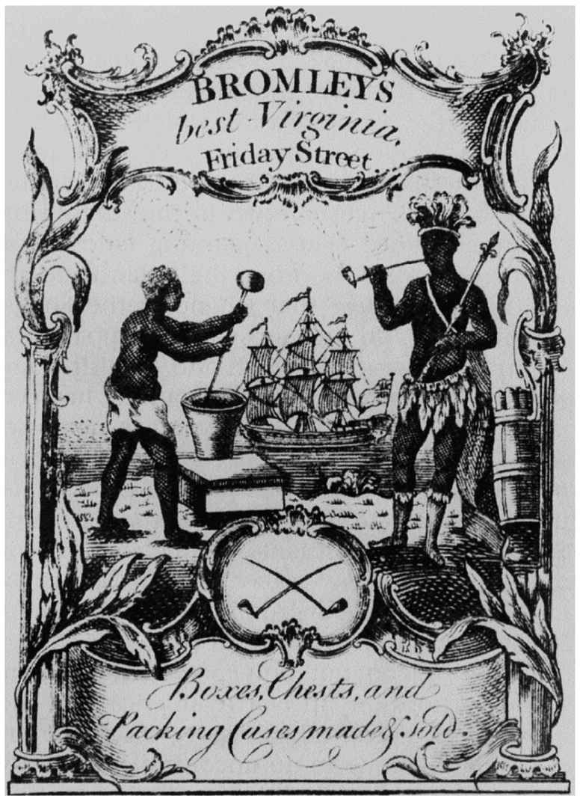

18世纪的标志是英国和法国之间争夺殖民地霸权的斗争。这两个国家面对面地在全世界——在北美洲、非洲和印度——进行竞争。
在北美洲，英、法两国的殖民地有许多共同特点。它们大约于同一时候被拓居。它们都位于大西洋沿海地区和西印度群岛。那里的土著居民较为稀少、原始，使英国人和法国人——不像西班牙人——无法希望靠土著劳动者生活，尽管他们在一些产糖的岛上确是依靠黑奴劳动者。由于英国人和法国人找不到贵金属，他们只好靠农业、捕鱼、伐木、商业和皮毛贸易养活自己。
北美英属殖民地大致可分成三类：主要生产烟草的弗吉尼亚及其紧挨着的邻地；从事捕鱼、伐木、商业和皮毛贸易的新英格兰及其不信奉国教的小片居留地；由于带来极大利润的甘蔗种植园而受到最高评价的英属西印度群岛。总的来说，这些英属殖民地的一个特点是人口稠密，人口远远多于法属殖民地。它们的另一个主要特点是政治上的独立性。每个殖民地都有一名总督、一个咨询会议和一个法院系统，三者都由英国任命。几乎每个殖民地都有一个民选的立法议会，它通常与委任的官员们不和。他们与伦敦政府最通常的争吵是：后者坚决认为所有殖民地的产品都应用英国船只运往英国。这在皇家官员看来，似乎是个合情合理的要求，因为他们也给了殖民地用自己产品垄断国内市场的权利。然而，殖民地的商人和种植园主由于不能使用较便宜的荷兰船只、不能将产品输往更加有利可图的非英国市场而对此提出强烈抗议。
北美法属殖民地因其战略位置而非常出色。最初的法国据点于1605年、1608年及1642年分别在阿卡迪亚（即新斯科舍）、魁北克及蒙特利尔建立。法国人以圣劳伦斯河流域为开拓殖民地的主要根据地，利用无与伦比的内陆水系向西推进到苏必利尔湖，向南推进至俄亥俄河。1682年，法国贵族拉萨尔划船沿密西西比河而下，声称整个密西西比河流域为法国所有，并将其命名为路易斯安那，以纪念路易十四。这引起了复杂的情况，因为18世纪英国王室发出的殖民地特许状大多附文授予“从大海到大海”即从大西洋到太平洋之间的地区。显然，每当英国殖民者到达并越过阿巴拉契亚山脉时，相竞争的英、法两国对土地所有权的要求就会发生冲突。不过，开始时，法国人在土地占有方面拥有很大优势。他们的探险者最先开辟了这些地区，然后，他们的官员沿着从圣劳伦斯河到路易斯安那的路径修筑了许多堡垒要塞。大西洋沿岸的英属殖民地被有效地从圣劳伦斯湾到墨西哥湾的一条巨大弧形地带所包围。

图159 这是18世纪弗吉尼亚香烟的标签：右边画的是一个正在吸烟的印第安人，左边是一个非洲奴隶。在17世纪的大部分时间里，白人契约奴仆占弗吉尼亚劳工的绝大多数，但在17世纪80年代，开始转向使用非洲奴隶。
法国人不仅占有北美洲的制高点，还拥有纪律和团结方面的巨大优势。法属殖民地不存在难以驾驭的民选机构。负责各殖民地防御的总督和处理财政、经济事务的地方行政长官皆由巴黎任命。这种安排较之摇摇欲坠的英国代议制制度更灵活、更有效。英属殖民地的总督只能请求和怂恿他们的议会采取某种行动步骤；他们几乎不能下命令，尤其是在他们的薪水基金由议会投票决定之后。在法属殖民地，是总督和地方行政长官下达命令，而他们的部下则加以执行。
法国人和英国人在西印度群岛也是近邻。该地区主要的法属殖民地为马提尼克岛和瓜德罗普岛，英属殖民地则为牙买加、巴巴多斯和巴哈马群岛。这些殖民地作为同南面的西班牙和葡萄牙殖民地通商的贸易站是很有价值的，但是，它们最宝贵的东西是它们的热带产品——糖、烟草和靛青——这些产品补充了法、英两国的经济。
印度与北美洲的那些殖民地相似，也是英、法两国激烈冲突的地区。17世纪初，英国人被荷兰人逐出东印度群岛后，便退到印度次大陆。到这一世纪末，他们已在印度营建了四个较大的据点：东海岸的加尔各答和马德拉斯，西海岸的苏拉特和孟买。1604年，法国人已组织了他们自己的东印度公司，但它很快就开始不起作用。它于1664年复兴。到这一世纪末，法国人在两个较大的据点——加尔各答附近的金登讷格尔和马德拉斯附近的本地治里——安置下来。
17世纪时，凡在印度居住、经商的欧洲人都是经强大的莫卧儿皇帝容许后才这样做的。如果他们不是举止规矩、不是谦卑地请求享有经商的特权，后者原可能会轻易地把他们赶进大海。18世纪时，由于莫卧儿帝国的崩溃，形势完全颠倒过来了。皇帝阿克巴的继承者们对印度教大众的迫害，导致了不满和混乱。地方统治者开始宣称独立，建立起世袭的地方王朝。马拉塔人代表模糊的、早期意义上的印度民族主义，从他们在西岸的孟买以南约100英里处的首都萨达拉扩张到离加尔各答不到200英里的地方。中央政权的瓦解给了英国东印度公司和法国东印度公司以可乘之机，使它们得以从纯粹的商业组织转变为地区霸主和贡物收集者。它们修筑堡塞、供养士兵、铸造货币并与周围的印度统治者缔结条约，因为印度已不存在能够阻止英、法扩展影响的中央政权。